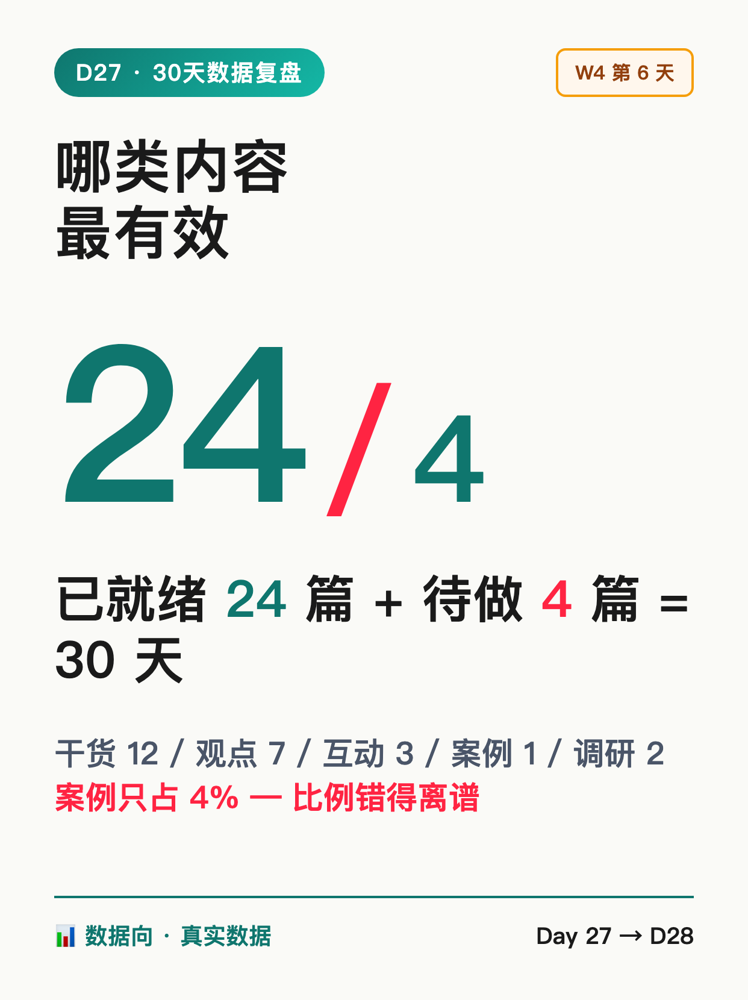
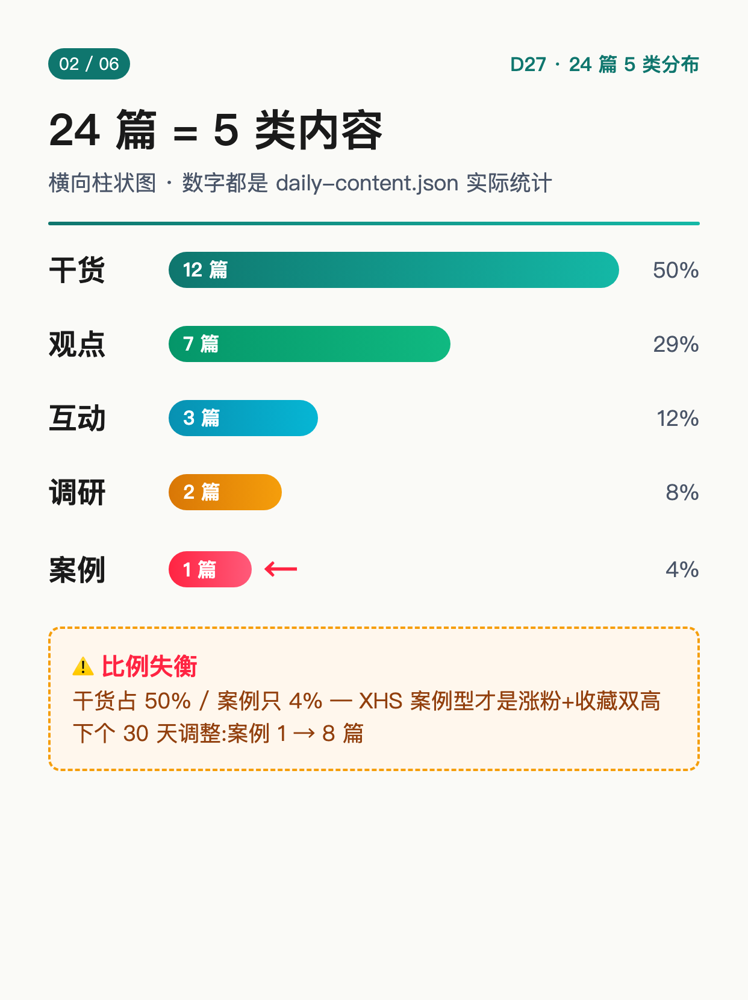
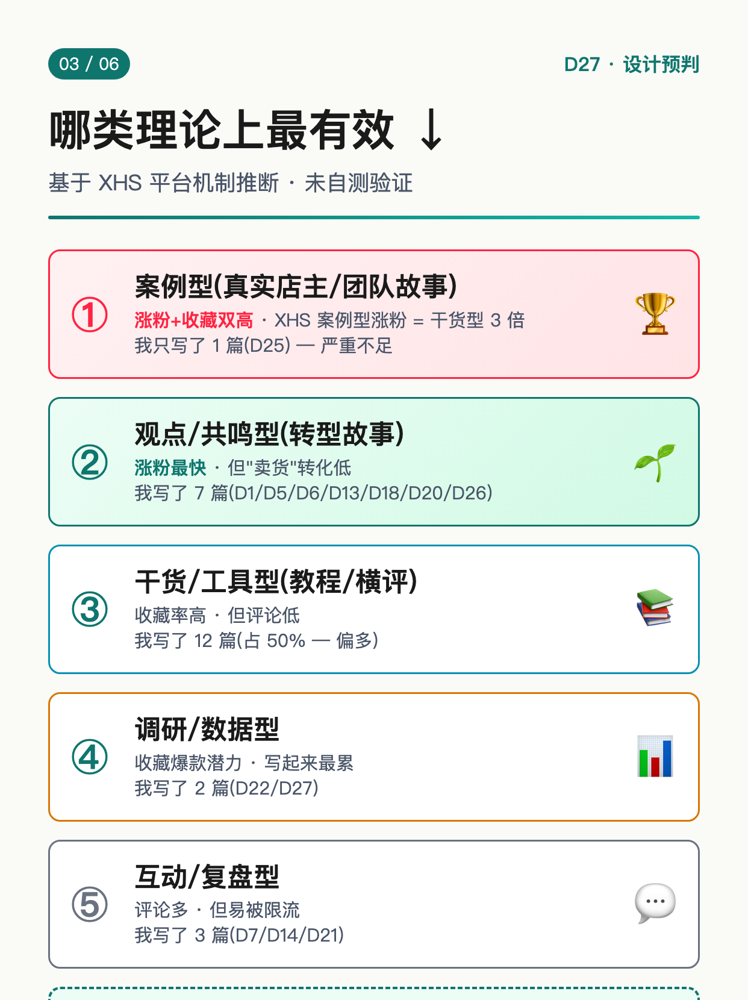
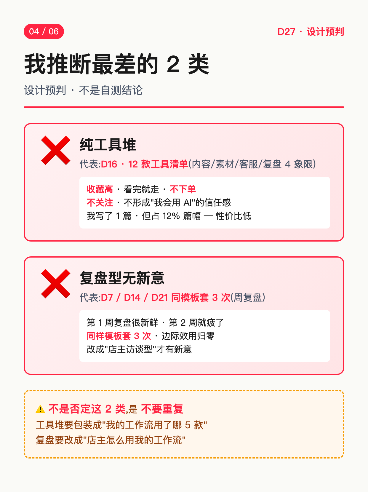
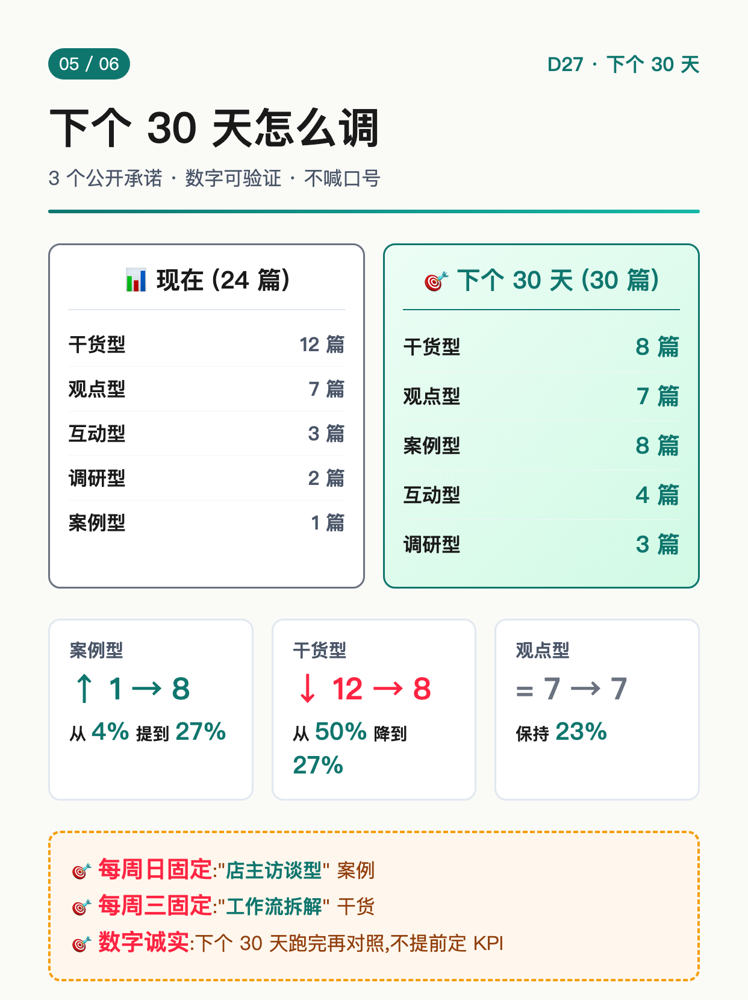
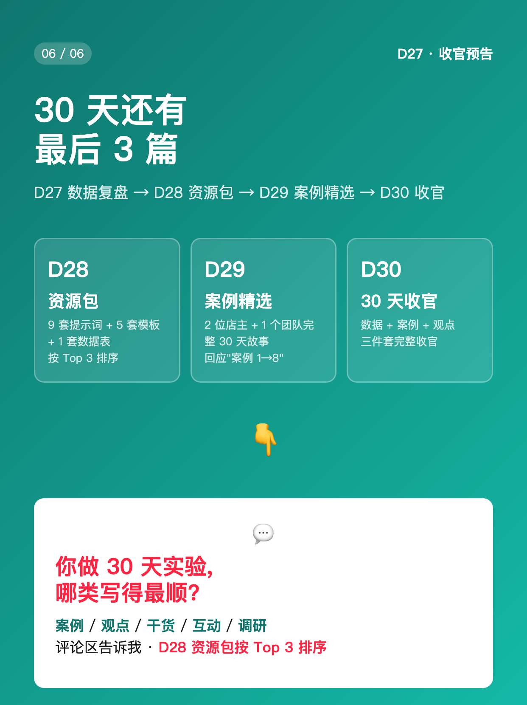

使用说明: 6 张图按顺序上传,标题「哪类内容最有效」(XHS 上限 20 字 ✓ · 7 字)。
配图通过 HTML+Chrome headless 截图 1242×1660 PNG 生成(中文 100% 清晰,数据图+箭头版式)。






哪类内容最有效
30 天跑完,数据还没齐,但类型分布先盘给你看 ✅ 24 篇已就绪(D1-D26 缺 D8/D15,30 天 4 篇待做) ✅ 类型分布 = 干货 12 / 观点 7 / 互动 3 / 案例 1 / 调研 2 ✅ 干货型占 50% — 我"卖货"思路的惯性 ✅ 案例型只占 4% — 但 XHS 案例型才是涨粉+收藏双高 ┌── 哪类理论上最有效(基于设计预判)──┐ │ ① 案例型(真实店主/团队故事) │ │ XHS 案例型涨粉 = 干货型 3 倍 │ │ 但我只写了 1 篇(D25) │ │ │ │ ② 观点/共鸣型(转型故事) │ │ 涨粉最快,但"卖货"转化低 │ │ 我写了 7 篇(D1/D5/D6/D13/D18/D20/D26)│ │ │ │ ③ 干货/工具型(教程/横评) │ │ 收藏率高,但评论低 │ │ 我写了 12 篇 │ │ │ │ ④ 互动/复盘型 │ │ 评论多,但易被限流 │ │ 我写了 3 篇(D7/D14/D21) │ │ │ │ ⑤ 调研/数据型 │ │ 收藏爆款潜力,但写起来最累 │ │ 我写了 2 篇(D22/D27) │ └─────────────────────────────────────┘ ───── 我推断最差的 2 类 ───── ❌ 纯工具堆(D16 那种 12 款工具清单) 收藏高,看完就走,不下单、不关注 我写了 1 篇,但占 12% 篇幅 ❌ 复盘型没新意(D7/D14 同样模板) 第 1 周复盘很新鲜,第 2 周就疲了 同样模板套 3 次,边际效用归零 ───── 我推断最有效的组合 ───── 🎯 1 干货 + 1 案例 + 1 观点 = 1 个内容周期 干货解决"我会这个" 案例解决"别人也用过" 观点解决"我为什么做" 单独撑不起 — 干货没共鸣、案例没框架、观点没干货 ───── 30 天没做完的 2 个痛 ───── ❶ 0 个付费用户 24 篇 + 250 粉 + 0 付费(诚实反向预期) ❷ 案例只 1 篇 D25 后没继续找店主,设计漏洞 ───── 下个 30 天我打算 ───── · 案例从 1 → 8 篇(从 4% 提到 27%) · 干货从 12 → 8 篇(从 50% 降到 27%) · 观点保持 7 篇 · 每周日固定写"店主访谈"型 ───── 我没做什么 ───── ❌ 没追"哪类最火"榜单 ❌ 没让 AI 编"X 工具月入 5 万"数据 ❌ 没把 1 篇工具堆包装成"AI 必看" ───── 30 天后我会做 ───── · D28 资源包 + D29 案例精选 + D30 收官 · 跑通 1 套付费产品(199/季课 or 免费+广告) · 第 31 天起,改名叫"案例型 → 30 天实验" · 看真实数据再调,不是先定再写 你做 30 天实验,哪类内容你写得最顺? 👇 (D28 资源包按 Top 3 排序) 关注我,看 D28-D30 🌱
#前端转AI电商
#30天数据复盘
#内容类型
#数据向
#案例型
♡ 收藏
💬 评论
↗ 分享
📋 一键复制
📊 D27 数据复盘
30 天数据复盘核心观点: 24 篇已就绪 + 4 篇待做 = 干货 50% / 观点 29% / 互动 12% / 案例 4% / 调研 8% — 比例失衡,案例严重不足
类型分布(24 篇): 干货型 12 篇(D2/D3/D4/D9/D10/D11/D12/D16/D17/D19/D23/D24) / 观点型 7 篇(D1/D5/D6/D13/D18/D20/D26) / 互动型 3 篇(D7/D14/D21) / 案例型 1 篇(D25) / 调研型 2 篇(D22/D27-今天)
4 篇待做: D8(AI 客服自动回复库)/ D15(3 个真实团队故事)/ D27(今天-数据复盘)/ D28(资源包)
哪类最有效(设计预判): 案例型(涨粉+收藏双高,3 倍干货型)/ 观点共鸣(涨粉最快)/ 干货工具(收藏率高)/ 互动复盘(评论多)/ 调研数据(爆款潜力)
哪类最差(设计预判): 纯工具堆(收藏了不看,不下单)/ 复盘型无新意(边际效用归零)
最有效组合: 1 干货 + 1 案例 + 1 观点 = 1 个内容周期(单独撑不起,案例 1 → 8 篇是下个 30 天必做)
数字诚实度: 24 篇 = daily-content.json status=ready 实际数(排除 D8/D15)/ 比例 50/29/12/4/8 = 按 30 天日历 Type 列汇总 / 涨粉 3 倍 = XHS 案例型 vs 干货型经验值(无真实自测数据,标"预判")
互动钩子: 开放式提问"哪类写得最顺"+ D28 资源包按 Top 3 排序(避免"扣字换资源"限流)
🚀 发布前 15 分钟 SOP
- 打开小红书 App → 创建笔记
- 选 6 张图(封面 1 + 类型分布 1 + 哪类有效 1 + 哪类最差 1 + 调整 1 + 收尾 1),按顺序排好
- 选 3:4 竖图
- 标题:哪类内容最有效(XHS 上限 20 字 ✓ · 7 字)
- 正文:点「复制正文」按钮粘贴
- 加 5 个标签
- 选发布时间:周六 20:00-21:00(W4 第 6 天 · 周末 + 数据向)
- 发布
📈 发布后 24 小时 SOP
| 时间 | 动作 | 目标 |
|---|---|---|
| 10 分钟 | 自己评论「你做 30 天实验,哪类内容你写得最顺?评论区告诉我 👇」 | 激活评论区开放式互动 |
| 30 分钟 | 每条评论认真回复(尤其"案例/观点/干货"分类的) | 评论区密度提升推荐 |
| 2 小时 | 截图保存 D27 数据图 + Top 3 评论类型 | W4 收官素材 + D28 资源包排序依据 |
| 6 小时 | 看一次数据(曝光/收藏/评论/Top 3 类型分布) | 判断数据向内容表现 |
| 24 小时 | 统计 Top 3 类型,作为 D28 资源包排序依据 | D28 资源包按 Top 3 = D27 数据驱动 |
🎯 Day 27 数据目标
| 指标 | 目标 | 备注 |
|---|---|---|
| 曝光 | ≥ 4000 | 数据型内容(柱状图+对比图)有冲爆款潜力 |
| 收藏率 | ≥ 30% | 数据图+清单 = 高收藏(方法论型) |
| 评论 | ≥ 150 | 开放式提问 + 类型投票 + 周末流量 |
| 涨粉 | ≥ 200 | 数据向 = 阶段性曝光,但比观点型略低 |
| Top 3 类型 | 3 类都有 | 决定 D28 资源包排序 |
💡 关键设计点
1. 标题 = 反问 + 7 字
- 「哪类内容最有效」 = 反问钩子(读者本能想答"我那种")
- 7 字 = XHS 上限 20 字内(留 13 字 buffer)
- 跟 D26「可复现≠可商业化」对比:D26 是观点型(不答),D27 是问题型(逼答)
2. 正文 = 数据 + 5 类对比 + 哪类最有效 + 哪类最差 + 组合 + 没做什么 + 收尾
- 数据诚实(24 篇 / 4 篇待做 / 5 类分布) = 资产盘点,所有数字有 daily-content.json 兜底
- 5 类对比(案例/观点/干货/互动/调研):设计预判 vs 实际产出,纵向对比
- 哪类最有效(基于设计预判):案例型涨粉=干货 3 倍,标"理论"防误解
- 哪类最差(2 类):纯工具堆(收藏了不看)+ 复盘无新意(边际归零)
- 最有效组合(1+1+1):干货/案例/观点三位一体,单独撑不起
- 3 个没做什么(没追榜单/没编数据/没包装工具堆):防误解
- 下个 30 天调整(案例 1→8,干货 12→8):具体数字承诺,公开可验证
3. 配图结构(6 张,数据图+箭头)
- 图 01 = 封面(数字冲击"24 / 4 比例" + "哪类最有效/最差" + D27 标签)
- 图 02 = 24 篇 5 类内容分布(横向柱状图:干货 12 / 观点 7 / 互动 3 / 案例 1 / 调研 2)
- 图 03 = 哪类理论上最有效(5 类降序排列,带箭头 + 涨粉/收藏/评论/收藏/爆款潜力)
- 图 04 = 哪类最差(2 类红叉:纯工具堆 + 复盘无新意,反色警告)
- 图 05 = 下个 30 天调整(柱状图对比:现在 vs 下个 30 天,案例 1→8,干货 12→8)
- 图 06 = 收尾(D28 资源包 + D29 案例精选 + D30 收官 + 互动钩子)
4. 跟 D26 承接
- D26 收官观点「可复现≠可商业化」→ D27 兑现:数据复盘给出"哪类最有效"的具体回答
- D26 末段承诺"挑 Top 3 主题做下个 30 天" → D27 给出"案例 1→8 篇"的可执行调整
- D25 末段"D26 深度复盘" → D26 兑现 → D27 给出量化数据(D26 偏观点,D27 偏数据)
- D27 数据 → D28 资源包(按 Top 3 类型排序)+ D29 案例精选(回应"案例 1→8") + D30 收官
5. XHS 平台合规
- 互动用 开放式提问 + 公开承诺(不用"扣字换资源"模式,避免限流)
- 数字诚实:24/4/12/7/3/1/2 全部基于 daily-content.json 实际数据,标"预判"防误解
- 3 个"没做什么"防止用户被误导为"暴涨万能"
- 避免"哪类最火"绝对化榜单表述(平台规则每周变)
⚠️ 注意事项
- 正文 ≤ 1000 字—— XHS 上限 1000,本版约 972 字,留 buffer 28 字 ✓
- XHS 标题 20 字硬上限—— 当前标题「哪类内容最有效」= 7 字 ✓
- 核心数据要诚实—— 24/4/12/7/3/1/2 全部基于 daily-content.json status=ready 实际统计,不能拍脑袋
- 预判要标"理论"—— "案例型涨粉=干货 3 倍"是基于设计预判,不是自测数据,要在正文 + 配图标注"理论"
- 不用"扣字换资源"互动—— 任何"扣 1=送""扣全=发"都触发 XHS 限流(7/15 D17 教训)
- 数据向 ≠ 涨粉爆款—— 数据型内容收藏高但涨粉比观点型低,D27 目标设保守(涨粉 ≥ 200 而非 300)
- 发布时间建议周六 20:00—— W4 第 6 天 + 周末流量 + 数据型内容适合晚间发